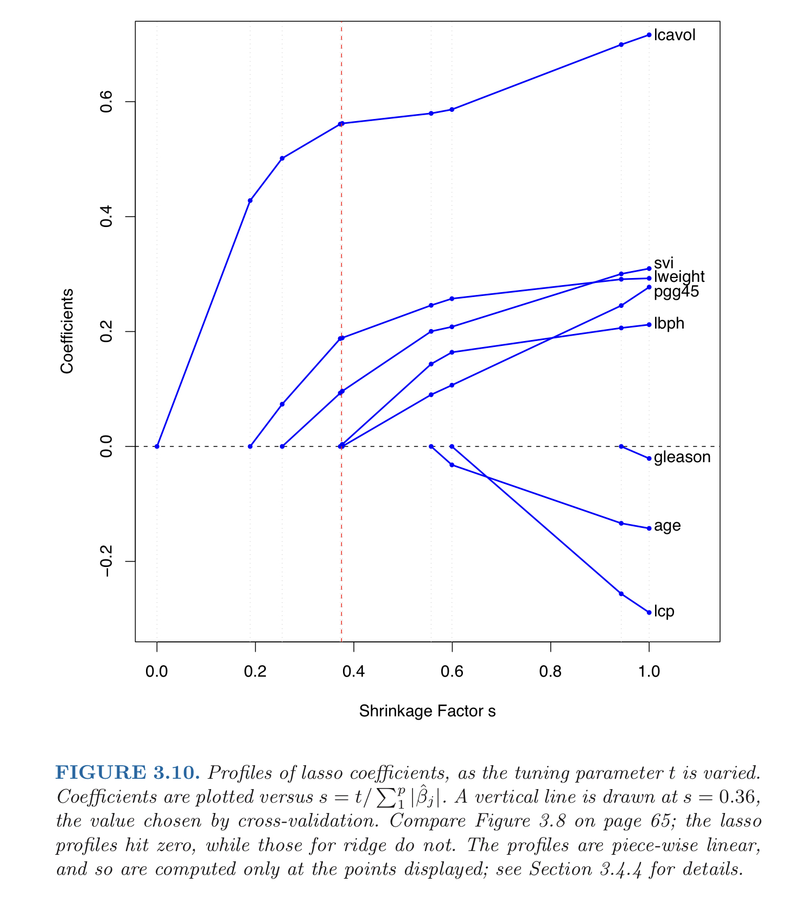

MA8701 Advanced methods in statistical inference and learning
L8: Lasso regression for the linear model
Before we begin
Literature
[ESL] The Elements of Statistical Learning: Data Mining, Inference, and Prediction, Second Edition (Springer Series in Statistics, 2009) by Trevor Hastie, Robert Tibshirani, and Jerome Friedman. Ebook. Chapter 3.2.3, 3.4.2
[HTW] Hastie, Tibshirani, Wainwrigh: “Statistical Learning with Sparsity: The Lasso and Generalizations”. CRC press. Ebook. Chapter 2.2-2.5, 3.7.
and for the interested student
- [WNvW] Wessel N. van Wieringen: Lecture notes on ridge regression Chapter 6.1-6.5, 6.7
Linear regression set-up
\[{\mathbf Y=X \boldsymbol{\beta}}+{\boldsymbol\varepsilon}\]
- where \({\mathbf Y}\) is a \(N \times 1\) random column vector,
- \({\mathbf X}\) a \(N \times p\) design matrix with row for observations and columns for covariates, and
- \({\boldsymbol{\varepsilon}}\) is a \(N \times 1\) random column vector.
As in L7, covariates are standardized and response is centered, but the design matrix need (in general) not have full rank (but for LS to exist we will often assume full rank - we often would like to compare to LS).
Lasso
Origin:
- the acronym is Least Absolute Shrinkage and Selection Operator, and that the
- lasso was invented by Robert Tibshirani and published in an article in JRSSB in 1996
HTW page 8: “the method lassos the coefficients for the model”
Now we will do what looks at first sight as a small change from the ridge - we will use
- a budget on the absolute value instead of squared value - moving from the \(L_2\) to the \(L_1\) norm.
But, this will have a large impact on the parameter estimates -
- both shrinking (to get a better MSE of our predictions) - and performing model selection (by shrinking all the way down to 0 - in a continuous way).
Again, we will not shrink the intercept \(\beta_0\), because then the this will depend on the origin of the response, and we will work with standardized covariates and centered response.
Minimization problem
Budget version
We want to constrain the size of the estimated regression parameters, so we give the sum of squared regression coefficients a budget \(t\).
Minimize the squared error loss
\[ \sum_{i=1}^N (y_i-\sum_{j=1}^p x_{ij}\beta_j )^2 \] subject to \(\sum_{j=1}^p \lvert \beta_j\rvert \le t\). The solution is called \(\hat{\beta}_{\text{lasso}}\).

Penalty version
\[ \hat{\beta}_{\text{lasso}}= \text{argmin}_{\beta} [\sum_{i=1}^N (y_i-\sum_{j=1}^p x_{ij}\beta_j )^2 + \lambda \sum_{j=1}^p \lvert \beta_j\rvert ] \] again, \(\lambda \ge 0\) is a complexity (regularization, penalty) parameter controlling the amount of shrinkage.
- The larger \(\lambda\) the greater the amount of shrinkage
- The shrinkage is towards 0
This version of the problem is also called the Lagrangian form.
The budget and penalty minimization problems are equivalent ways to write the ridge regression and there is a one-to-one correspondence between the budget \(t\) and the penalty \(\lambda\).
Small notational difference in the two textbooks
- In HTW an extra \(\frac{1}{2N}\) factor for the squared error for the ridge and the lasso,
- which is just for ease of interpretation of a future shrinkage parameter to be included
- (to make that shrinkage parameter comparable across different sample sizes in the use of cross-validation).
- We will also see this effect of a scaling by a factor for the squares error in the derivation of a lasso formula for the one covariate and ortogonal design matrix case (below).
- The factor does not influence the solution of the minimization of the squared-error loss we consider now (only the \(\lambda\)).
Parameter estimation
As explained, centred covariates and responses are used - and the intercept term is removed from the model. Then \({\mathbf X}\) does not include a column with 1s and has dimension \(N \times p\).
The use of the absolute value in the penalty term makes the solution in general non-linear in \(y_i\), and no closed form (analytic) solution is available.
As for ridge, cross-validation is used (as kind of a standard) to choose an optimal \(\lambda\).
Observations
If we make the budget \(t\) sufficiently small some of the coefficients will be exactly zero.
If \(t\) is chosen larger than \(t_0=\sum_{j=1}^p \lvert \hat{\beta}_{{\text {LS}},j} \rvert\) the lasso estimates equal the LS estimates.
The nature of the shrinkage is complex.
Closed form (analytic) estimator of the lasso estimator is only available for one covariate, two covariates and for an orthonormal design matrix.
Compare ridge and Lasso
These figures are taken from Hastie, Tibshirani, and Friedman (2009) and are based on the “prostate cancer example”. The response is the log of PSA (level of a prostae specific antigen), \(N=97\) and there are \(p=8\) covariates.

Parameter estimation
The lasso regression estimator is not one, but a whole sequence of estimators for \(\beta\) - one for each choice of penalty parameter \(\lambda>0\).
This sequence is called the lasso regularization path.
One covariate
This case - explicit solution! New word: soft thresholding” - (this is as opposed to hard thresholding as is used when a coefficient is set to 0=aka model subset selection)
This can also be explained using the theory of subgradients.
Two covariates
Also explicit solution - in Tibshirani (1996), (without loss of generality) assume the LS estimators are both positive. \(t\) is from the budget version of the lasso
\[\hat{\beta}_1=(\frac{t}{2}+\frac{\hat{\beta}_{\text{LS},1}-\hat{\beta}_{\text{LS},2}}{2})^{+}\] \[\hat{\beta}_1=(\frac{t}{2}-\frac{\hat{\beta}_{\text{LS},1}-\hat{\beta}_{\text{LS},2}}{2})^{+}\]
Observe, that the correlation of the covariates (i.e. as estimated proportional to the the \(X^T X\) matrix for centered covariates) is not directly part of the solution (but it is in the construction of the LS estimator).
See Figure 4 from Tibshirani (1996) in class: \(N=100\) data points from the model \(y=6 x_1+3x_2\) with no noise, but where \(x_1\) and \(x_2\) are drawn from \(N_2(\mathbf 0, diag(\rho))\).
Orthogonal covariates
\[{\mathbf Y=X \boldsymbol{\beta}}+{\boldsymbol\varepsilon}\] where \({\mathbf Y}\) is a \(N \times 1\) random column vector, \({\mathbf X}\) a \(N \times (p+1)\) design matrix with row for observations and columns for covariates, and \({\boldsymbol{\varepsilon}}\) \(N \times 1\) random column vector.
Futher, \(\text{E}(\boldsymbol{\varepsilon})=\mathbf{0}\) and \(\text{Cov}(\varepsilon)=\text{E}(\varepsilon \varepsilon^T)=\sigma^2\mathbf{I}\).
NOW: Assume that the design matrix \(\mathbf{X}\) is ortogonal, that is, \(\mathbf{X}^T\mathbf{X}=\mathbf{I}_{pp}=(\mathbf{X}^T\mathbf{X})^{-1}\).
Derive the lasso regression parameter (for a given \(\lambda\)).
Just a few starting observations - and then we may use the soft-thresholding result for each covariate separately.
Group discussion
Write down the optimization problem and see how far you get!
Algorithmic solutions
Wieringen (2020) Section 6.4
In general there is no closed form solution to the lasso parameter estimation (except the special cases handled above).
- Tibshirani (1996): reformulated lasso optimization to a quadratic program, optimizing a quadratic form subject to linear constraints. For small \(p\) viable, but not for larger \(p\) due to the many linear constraints.
- The loss function of the lasso can be optimized by iterative application of the (generalized) ridge regression using local a quadratic approximation of the absolute value function. Difficult if covariates superlinear.
- Gradient ascent - but using a generalized derivative, G\(\^{a}\)teaux derivative. R penalized package by Goeman (2010).
- LARS: see Section of Hastie, Tibshirani, and Friedman (2009) Section 3.4.4 and Hastie, Tibshirani, and Wainwright (2015) Section 5.6 (not on reading list, but interesting)
Cyclic coordinate descent
Wieringen (2020) Section 6.4. Hastie, Tibshirani, and Wainwright (2015) Section 2.4.2 and 5.4
We have for one covariate (predictor) seen how the soft threshold is the solution to the lasso regression parameter estimation and for a orthonormal design matrix we have seen that we may perform the estimation separately for each covariate (for a given value of \(\lambda\)).
Now the idea is to
- repeatedly cycle through the predictors in some fixed (but arbitrary) order.
- When we come to covariate \(j\) we update the lasso estimator for \(\lambda_j\) by holding the other coefficients fixed and minimizing the objective function for covariate \(j\) -
- but then the response is not \(y\) but the difference between \(y\) and the linear predictor of all the other covariates except \(j\).
This is motivated by rewriting the optimization problem
\[ \sum_{i=1}^N (y_i-\sum_{j=1}^p x_{ij}\beta_j )^2 + \lambda \sum_{j=1}^p \lvert \beta_j\rvert \] \[ \sum_{i=1}^N (y_i-\sum_{k\neq j} x_{ik}\beta_k -x_{ij}\beta_j )^2 + \lambda \sum_{k \neq j} \lvert \beta_k\rvert + \lambda \lvert \beta_j \rvert \]
If we want to minimize this for \(\beta_j\) then the sum of absolute values may be dropped from the expression we want work with, and we may define
\[\tilde{y}_i=y_i-\sum_{k\neq j} x_{ik}\beta_k\] we may write the minimization problem for one \(\beta_j\) at a time
\[\sum_{i=1}^N (\tilde{y}_i -x_{ij}\beta_j )^2 + \lambda \lvert \beta_j \rvert\] This problem we know the solution to, this we would for one covariate to be the soft-threshold function.
We will then need some intitialization for the \(\beta\)s and then cycle through the one-parameter problems until convergence.
We may view this as a “coordinate-wise minimization scheme”
Group discussion
Write down in pseudo code the steps of the cyclic coordinate descent algorithm.
Result HTW page 110: Additive function to minimize: \[ f(\beta)=g(\beta)+\sum_{j=1}^p h_j(\beta_j)\]
\(g\) differentiable and convex, \(h\) univariate and convex. It is found that the (cyclic) coordinate descent algorithm is guaranteed to converge to the global minimizer.
Cyclic coordinate descent and \(\lambda\)
If \(\lambda=0\) (and the design matrix has full rank) this will be a univariate regression of partial residuals onto each covariate, and then cycling through the covariates until convergence. This is not a very efficient method to find the least squares estimators.
We are interested in the full lasso path, not just the result for a given \(\lambda\).
- Start with a value of \(\lambda\) such that the optimal solution is equal to a vector of all zeros.
This will happen at \(\lambda_{\text max}=\max_{\text{j}} \lvert \hat{\beta}_{\text{LS},j} \rvert\).
Then we decrease \(\lambda\) by a small amount and run cyclic coordinate descent until convergence.
Then we decrease \(\lambda\) again, but this time we choose the result at the previous \(\lambda\) as a so-called “warm start”.
This method is referred to as pathwise coordinate descent.
Gasoline lasso
This is how lasso is fit using the glmnet R-package.
Code
ds <- read.table("./sniffer.dat",header=TRUE)
x <- apply(ds[,-5],2,scale)
y <- ds[,5]-mean(ds[,5])
# Now we fit a lasso model; for this we use the default `alpha=1`
fit.lasso=glmnet(x,y)#,lambda=newlambda)
plot(fit.lasso,xvar="lambda",label=TRUE)
Code
cv.lasso=cv.glmnet(x,y)
#which.min(cv.lasso$cvm)
plot(cv.lasso)Code
plot(fit.lasso,xvar="lambda",label=TRUE);
abline(v=log(cv.lasso$lambda.1se))Code
coef(cv.lasso)5 x 1 sparse Matrix of class "dgCMatrix"
s1
(Intercept) -1.440776e-15
TankTemp .
GasTemp 3.524047e+00
TankPres .
GasPres 4.207423e+00Conditions for a solution to the penalty version
(HTW page 9)
The details are found in HTW Chapter 5 (not on our reading list), but the student familiar with convex analysis, dual problems and Karush-Kuhn-Tucker (KKT) conditions might find Chapter 5 of interest.
Convex analysis theory: necessary and sufficient conditions for a solution to the lasso penalty problem is
\[ \frac{1}{N}\langle {\mathbf x}_j,{\mathbf y}-{\mathbf X}\beta \rangle+\lambda s_j=0 \mbox{ for } j=1,\ldots,p\]
where \(\langle a,b \rangle=a^T b\) denotes the inner product. Each \(s_j\) is an unknow quantity, equal to
- \(\text{sign}(\beta_j)\) if \(\beta_j\neq 0\)
- some value in \([-1,1]\) otherwise (socalled subgradient of the absolute value function).
We may solve this problem in \((\hat{\beta},\hat{s})\), instead of the penalty version.
Degrees of freedom
(HTW 2.5)
In ESL Ch 7.6 we defined the effective number of parameters (here now referred to as the effective degrees of freedom) for a linear smoother, and used that for the ridge regression. However, the lasso is not a linear smoother (it is nonlinear in the reponses \(y_i\)).
The lasso is an adaptive fitting procedure, and if our final model has \(k\) covariates that is different from zero, we would not think that the effective degrees of freedom for the lasso is then \(k\). However, it turns out that it is correct to count the number of degrees of freedom by the number of nonzero coefficients.
In ESL Ch 7.6 we also defined the degrees of freedom using the covariance generalization: \[\text{df}(\hat{{\mathbf y}})=\frac{\sum_{i=1}^N \text{Cov}(\hat{y}_i,y_i)}{\sigma_{\varepsilon}^2}\]
where the covariance is taken for the response and predicted response, while the covariates are kept fixed (this formula was developed in connection to the in-sample prediction error).
It has been shown (HTW refer to this at “somewhat miraculously) that with a fixed penalty parameter \(\lambda\) the number of non-zero coefficients \(k_{\lambda}\) is an unbiased estimate for the degrees of freedom.
This is explained by considering that the lasso does not only select predictors (selecting predictors will give an inflated degrees of freedom) - but also shrinks the coefficients relative to the LS estimates. These two forces kind of cancel out.
HTW (page 19): a general proof is difficult, but for an orthogonal design using the fact that the lasso estimates are soft-thresholded versions of the univariate regression coefficients for the othogonal design.
Properties of the lasso estimator and solution
Uniqueness
(WNvW 6.1)
The lasso estimator is non-unique if \(p>N\) and if not full rank, else unique.
The prediction \(X \hat{\beta}_{\text lasso}\) is unique.
Sparsity
“Geometric accident”
Shrinkage
Moments
Not on closed form. Later in W6 look at using bootstrapping for statistical inference.
Oracle property
Zou (2006) results to be added.
Is really the MSE for lasso smaller than for LS?
WNvW and reference within - with figure - to be added
What needs to be improved?
To be added or just in L9 - when we look at friends of the lasso.
Summing up
- When is lasso preferred to LS. Only for (an unknown?) range of \(\lambda\)-values.
- Lasso vs ridge: Neighter ridge or lasso dominates (in MSE) the other in all situations.
Take home message from Tibshirani (1996) Section 11:
- “Small number of large effects: subset selection is preferred, the lasso not quite as well and the ridge regression performs poorly”
- “Small to moderate number of moderate-sized effects - the lasso does best, follow by ridge regression and then subset selection”
- “large number of small effects - ridge regression does best by a good margin, followed by lasso and then subset selection”
Resources
- Videos in statistics learning with Rob Tibshirani and Daniela Witten, made for the Introduction to statistical learning Springer textbook.
- Video from webinar with Trevor Hastie on glmnet from 2019